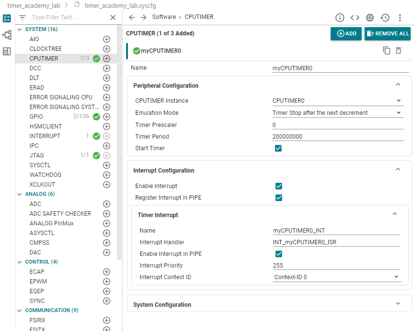
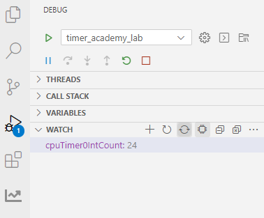

Timer LED Lab#
The objective of this lab is to learn how to create a project for a C2000 device in TI’s Code Composer Studio (CCS) platform. In doing so, you will also work with SysConfig (system configuration), CCS’s graphical user interface (GUI) tool created to help simplify project development. SysConfig can be used to configure the device’s pins as well as peripheral settings. Based upon user settings, the tool generates C-code that utilizes the DriverLib application programming interface (API). This auto-generated C-code automatically updates as you edit any SysConfig GUI settings and can be used in your software example with a simple call.
This lab exercise demonstrates how to generate a project that toggles two LEDs on your board.
Solution#
The Academy lab modules provide step-by-step instructions for users to follow along and carry out; however, the completed software solutions are also available in the device’s SDK.
See your device’s specific SDK to obtain this lab’s software solution.
You can download your device’s SDK by going to the device’s product page on TI’s website and navigating to the ‘Design & Development’ and ‘Software Development’ tabs.
This specific lab’s solution can be found in: [Device_SDK_Install_Path]/examples/driverlib/single_core/timer.
Overview#
In this lab, we will begin with an empty project and walk through how to add the configurations and code needed to toggle two LEDs on your board. To accomplish this goal, we will use a CPU Timer module to generate interrupts at a specified rate. Within the CPU Timer interrupt service routine (ISR), we will toggle the GPIOs that are connected to the LEDs of the board. By toggling these GPIOs on and off, we will be able to view the LEDs of the board toggling on and off.
Lab Setup#
Before beginning the lab, be sure to acquire the necessary hardware and software to complete it. Requirements are listed below.
Hardware Setup#
Required hardware for this lab:
ControlSOM hardware with the supplied USB cable.
This lab exercise is intended for the F29H85x ControlSOM. Before continuing this lab, please be sure to reference the ControlSOM User Guide for hardware setup details.
Using the supplied USB cable, connect the USB Type-C connector into your C2000 board and the USB Standard Type-A connector into your computer’s USB port.
Please note that the docking station is not necessary for this lab but may be required to successfully run other Academy labs.
If you are using the ControlSOM docking station, an additional power supply is needed for the docking station. See the ControlSOM User Guide for more details on how to set up the ControlSOM hardware.
Check the power status LEDs (LED0 and LED1) to confirm that the board is powered and provides a JTAG communication link between the device and CCS.
Software Setup#
To begin development, you need two key software installations:
The device’s SDK
Your device’s software development kit (SDK) download can be found on the “Software Development” section of your device’s product page on TI’s website.
The Code Composer Studio (CCS) platform.
See the CCS User’s Guide for more information about this IDE.
Start a CCS Project#
Our first task is to import an empty project to our CCS workspace.
Open CCS and go to File → Import Project(s). A new window should appear.
Click the Browse button and select the
[MCU_SDK_[DEVICE]_Install_Path]/examples/driverlib/single_core/empty_projectsand click “Select Folder”.Note that the default Windows installation directory
[MCU_SDK_[DEVICE]_Install_Dir]isC:/ti/c2000/MCU_SDK_[DEVICE]_X_XX_XX_XX_XX.
Under Discovered Projects, you should now see the
empty_driverlib_project.

Click Finish to import and copy the
empty_driverlib_projectinto your CCS workspace.After the project has been imported, the project explorer window should look like below:

Rename the project:
Right-click on the project in the “Project Explorer” panel. Select Rename from the drop-down menu and rename the project to ‘timer_academy_lab’ or a name of your choosing.
Now click the Down Arrow located to the left of the imported project to expand it and select
empty_driverlib_project.c. Right-click on the file, and select Rename to rename the file to ‘timer_academy_lab.c’ or a name of your choosing.
Configure the GPIOs#
We will now use SysConfig to set up the two GPIO signals that will be used to toggle the two LEDs. For example, for F29H85x controlSOM:
LED0 = GPIO9
LED1 = GPIO23
LED 0#
In the project directory, open the
.syscfgfile by double-clicking on it.Navigate to the
Softwaretab in this SysConfig (it should open by default).In the ‘SYSTEM’ group, click + next to ‘GPIO’ to add a GPIO instance.
Change the GPIO settings as shown and described below.
Rename the GPIO to “myBoardLED0_GPIO”.
Change the ‘GPIO Direction’ to an “output”.
Click the box to enable ‘Write Initial Value’ and select “0” as the ‘Initial Value’.
Click on the ‘Pinmix’ drop-down to expand it, and select the board’s LED GPIO (in this case, GPIO9).
To check or confirm which GPIO is connected to your board’s LED, reference your board’s schematics.

LED 1#
Perform the same actions as needed for LED0 above, but implement the below changes:
Replace the GPIO name with “myBoardLED1_GPIO”.
Select the other LED GPIO (in this case, GPIO23), and set the initial value to ‘1’.
In this way, the two LEDs will toggle opposite of one another.
Configure the CPU Timer#
We will now use SysConfig to set up the CPU Timer module that will generate an interrupt needed to toggle the LEDs at a specified rate.
*With SysConfig still open, click the ‘+’ next to ‘CPUTIMER’ to add a CPU Timer instance.
Change the CPU Timer settings as shown and described below.
Check that the timer name is “myCPUTIMER0” and the ‘CPUTIMER Instance’ is “CPUTIMER0”.
Set the ‘Timer Period’ to be “200,000,000”.
Click on the ‘Interrupt Configuration’ drop-down to expand it.
Check the boxes next to
Enable interrupt,Register Interrupt in PIPE.The default ‘Timer Interrupt’ settings that populate will be used for this lab. Check that they match the image below.


Program Setup#
In your project, double-click on the .c file to open it. Follow the below instructions to develop your program.
Define Global Macros and Variables#
First, we need to be sure to include the “board.h” header because this example is based on Sysconfig. If you are configuring peripherals (for example, a GPIO or CPU Timer) through SysConfig, the “board.h” file will include the corresponding peripheral macros as well as the initialization function for that peripheral.
Next, we need to define the global variable cpuTimer0IntCount to help visualize and track the execution of CPU Timer interrupts.
We will be able to watch this variable increment later during a debug session by using the CCS “Watch” window.
Copy the below code into your .c file.
//
// Included Files
//
#include "board.h"
//
// Globals
//
uint16_t cpuTimer0IntCount; // CPU Timer interrupt counts.
Define main()#
The next step to set up our program is to define the main() function that will run on the device.
Copy the below code into your .c file after the “Globals” section.
Device_init()must be called to initialize the platform.Board_init()must be called to apply SysConfig-generated settings and code.Since interrupts are used in this example, we must enable interrupts on a global level.
No further program is needed in
main()since the CPU Timer will be triggering interrupts at its specified rate to accomplish our LED toggling goal.Keep in mind we must still define the CPU Timer interrupt service routine (ISR). This will be done in the next step.
//
// Main
//
int main(void)
{
//
// Initialize device clock, peripheral clocks and interrupts.
//
Device_init();
//
// Board Initialization.
//
Board_init();
//
// Enable PIPE Global Interrupt (for INTs and RTINTs) and INT enable in CPU.
//
ENINT;
Interrupt_enableGlobal();
//
// IDLE loop. Just sit and loop forever.
//
while(1)
{
}
}
Set Up the CPU Timer ISR#
As mentioned above, we must now add the CPU Timer interrupt handler code to your the .c file below your main().
Make sure that the interrupt handler function name is same as provided in the SysConfig parameter.
Whenever the CPU Timer triggers an interrupt, we want to toggle both LED GPIOs. We can do so by using the “GPIO_togglePin()” DriverLib function.
Note that the source code for all DriverLib functions can be found in your device’s SDK.
For F29H85x, for example, the DriverLib source files can be found in
mcu_sdk_f29h85x\source\driverlib.
We will also increment the cpuTimer0IntCount variable so that when this ISR executes, we will see an increase in this global variable.
Copy the below code into your .c file after the main().
//
// ISR for the timer interrupt.
//
void INT_myCPUTIMER0_ISR(void)
{
//
// Toggle both LED GPIOs on/off.
//
GPIO_togglePin(myBoardLED0_GPIO);
GPIO_togglePin(myBoardLED0_GPIO);
//
// Increment the interrupt counter variable.
//
cpuTimer0IntCount++;
}
Build the Project#
With the configurations and code complete, we can ‘Build’ the project to check for any errors. Once the project builds without errors, we will connect to the device, load the program to the device, and run it within a debug session.
Right-click on your project and hover over the Build Configurations button until another panel pops up. Select the CPU1_RAM build configuration.
With the RAM configuration selected, the project will be loaded to the RAM memory of the device.
Right-click on your project again and select Build Project(s) to build your program. Fix any compilation errors.
Run the Project#
Now we will start a debug session.
Ensure that the USB cable from your board is connected to your computer.
Right-click on your project and select Debug Project.
If prompted, check that only CPU1 is selected to load the program to.
This action should re-build your project, connect to the debugger, and load the program to the device.
The DEBUG window should populate and the debugger should have paused at the beginning of your
main().

/

Now we will continue the debug session and the
main()by clicking the blue Continue button in the upper left corner.Note that there are several other buttons that can be used to help debug your project by stepping through your program line by line. Feel free to explore them here, or see the CCS User’s Guide for more details on its capabilities.
Validate the Project#
With the project now running freely, we can now check to see if the project is running as expected. There are two ways to do so:
When viewing your board, you should see two LEDs toggling on and off (opposite of one another).
We can view the
cpuTimer0IntCountto see if it is incrementing as expected:In the CCS
DEBUGwindow, expand the “WATCH” drop-down.Click the + and type in “cpuTimer0IntCount” as the expression to watch.
Be sure to turn on Continuous Refresh by clicking on the corresponding button at the top of the “WATCH” window.
You should see this variable incrementing with each toggle of the LEDs, indicating the ISR is being executed each time.


Terminate the Debug Session and Close the Project#
With the project developed and validated, we can close this debug session.
Click the red Stop button at the top of your
DEBUGwindow to terminate the active debug session and disconnect the debuggerYou can return to the
Project Explorerwindow by clicking on the corresponding button at the top of the panel on the left.
This concludes the lab exercise.
Full Solution#
Recall that the completed software solution is available as well. Please refer to the top of this page to review the location of this lab’s software solution.
Lab Summary#
In accomplishing this lab, you should have:
Learned how to create a simple project for your device using the device SDK and TI’s CCS platform.
Utilized CCS tools and SysConfig to set up device peripherals, run a complete program, and validate the program during a debug session.
Gained familiarity with the basic functions of the GPIO and CPU Timer peripherals.